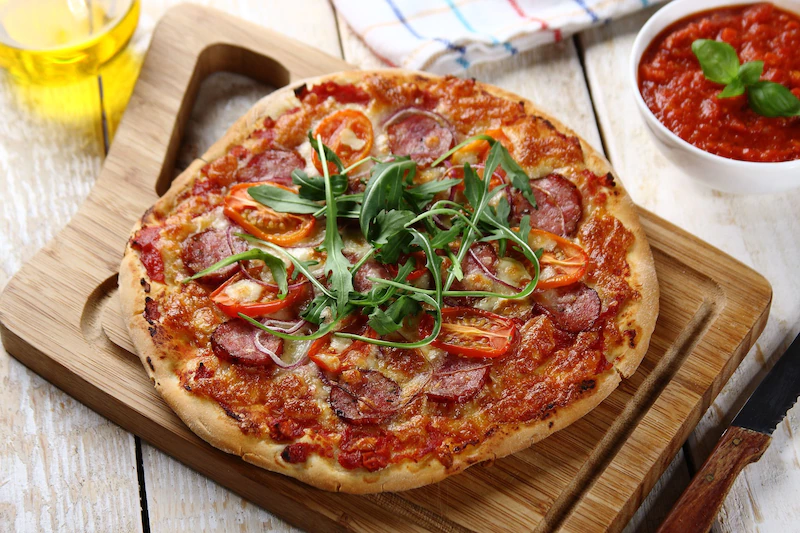

Domowa pizza

Opis
Najlepsza pizza nie musisz jesc na miescie
ciasto
- maka pszenna
- maka pszenna do podsypania
- drozdze
- cukier
- oliwa z oliwek
- sol
- woda
farsz
- czerwona cebula
- naturalnie smaczne spaghetii bolognese knorr
- pomidory pelatti z puszki
- pomidory koktajlowe
- tarta mozarella
- rukola
- kielbasa pepperoni
- Wszystkie składniki na ciasto połącz ze sobą dobrze wyrabiając. Gotowe ciasto przykryj czystą, płócienną ścierką i odstaw na 40 minut w ciepłe miejsce tak, aby ciasto mogło wyrosnąć.
- Po tym czasie ciasto jeszcze raz wyrób ręką, podsyp trochę mąką i podziel na 4 do 6 kul tej samej wielkości.
- Na stolnicy lub gładkim blacie stołu delikatnie podsypanym mąką rozwałkuj lub rozciągnij ciasto ręką, formując okrągły placek. Placek ułóż na pergaminie na odwróconej do góry nogami blasze z piekarnika.
- W garnku zagotuj pomidory pelatti z Knorr Naturalnie smaczne Spaghetti Bolognese - dzięki niemu uzyskasz sos o wyrazistym ziołowo pomidorowym smaku, który będzie miał idealną konsystencję.
- Ciasto z wierzchu posmaruj wcześniej zrobionym sosem. Na środek pizzy, na sos, posyp stary sera mozzarella, na ser kolejno układaj plastry czerwonej cebuli, plastry kiełbasy oraz przecięte na pół pomidorki.
- Pizzę umieść w nagrzanym do 220°C piekarniku i piecz około 25 minut. Gotową pizzę podawaj posypaną listkami rukoli i pozostałym sosem pomidorowym.